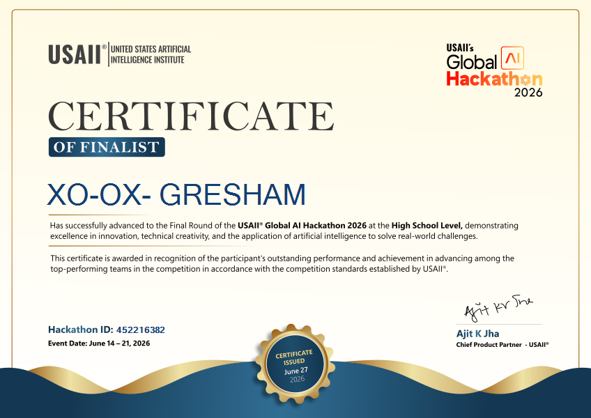

Certificate of Finalist
Advanced to the Final Round of the USAII Global AI Hackathon 2026 (High School Level).

Try it!
View Project Page (AI Lab)
About the Project
What it does: You sign up with a magic link, go through a quick onboarding that figures out your goals and learning style, then the AI matches you to a Village of people working on the same things. Inside your Village you've got a real-time discussion feed, an AI Village Elder that drops discussion prompts, AI study challenges you can generate on any topic, and a "Topic Explorer" that turns confusing information into plain-language checklists and next steps. There's also a Study Hub with a Socratic-method Study Buddy, an Essay Coach, a multi-week Study Planner, and College Prep tools. For groups that want structure, you can create courses with lessons and completion tracking.
How it was built: React + Vite frontend with Tailwind CSS, FastAPI Python backend, Supabase for the database and auth (magic link login + realtime subscriptions), and OpenRouter for free-tier LLM inference across all the AI features. The AI matching system considers goals, strengths, weaknesses, interests, and learning style to place you in a compatible Village. Everything is deployed on Vercel — frontend and backend as serverless functions.
Challenges: This project grew fast. Every feature I added made me want to add three more. Keeping scope under control was the real fight — there's a whole features list I had to cut just to ship. The auth flow was another headache: Supabase's SITE_URL was stuck pointing at localhost, so I had to build a backend proxy that follows the 303 redirect, extracts the session tokens, and reconstructs the URL with the real production domain. That took way longer than it should have.
What I learned: Supabase Realtime is genuinely impressive once you work around its quirks. I also got way better at prompt engineering — turns out getting an LLM to generate a useful collaborative study plan for a group of 6 people with different interests is harder than it sounds. And I confirmed something I suspected: I build better when I'm building for other people, not just myself.
What's next: Notifications, post pagination, mobile-responsive nav, and a proper avatar upload system. The feature list never really ends.
Dev Notes
Tech Stack
React + Vite + Tailwind (frontend), FastAPI (backend), Supabase (DB + auth + realtime), OpenRouter free-tier LLMs. Deployed on Vercel.
Hardest Part
The Supabase magic link SITE_URL bug ate days of debugging. A backend proxy that follows 303 redirects and extracts session tokens was the fix — but it's fragile and I'm not proud of it.
What I'd Do Differently
Lock the scope earlier. I spent too much time on nice-to-have features (Courses, Study Planner) when the core loop — match → discuss → learn — wasn't fully polished yet.
Cost
Zero. Supabase free tier, Vercel hobby plan, and OpenRouter :free models. Everything runs on free tiers — if this scales, that'll be a fun problem to have.
← Back to Hackathons Back to top